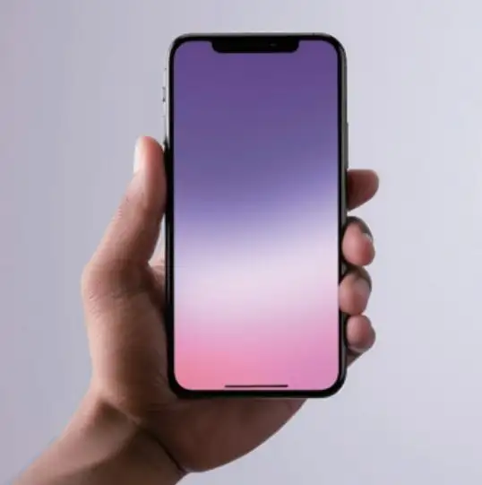

能愿动词“想”
想 đứng trước động từ, biểu thị mong muốn hoặc dự định.
想 + động từ
我想去超市。 🔊
我哥哥不想休息。 🔊

Hỏi và nói số điện thoại di động.
Dùng câu liên động chỉ mục đích hoặc phương thức.
Biểu thị mong muốn hoặc dự định.
Hỏi cách thức thực hiện hành động.
Chọn một từ, sau đó chọn hình ảnh tương ứng.
Nhấn vào thẻ để lật. Nhấn chữ Hán hoặc nút loa để nghe phát âm.
想 đứng trước động từ, biểu thị mong muốn hoặc dự định.
我想去超市。 🔊
我哥哥不想休息。 🔊
Vị ngữ gồm từ hai cụm động từ trở lên; cụm sau có thể nêu mục đích của hành động trước.
我想去超市买东西。 🔊
妈妈去超市买菜。 🔊
Cụm động từ thứ nhất có thể nêu cách thức thực hiện hành động thứ hai.
我们坐出租车去西安饭店。 🔊
我坐车去。 🔊
怎么 đặt trước động từ để hỏi về phương thức thực hiện hành động.
我们怎么去？ 🔊
她怎么去超市？ 🔊
Chọn nhân vật để ẩn lời thoại của vai đó. Nhấn vào dòng thoại để nghe.
Chọn đáp án đúng theo nội dung ba bài khóa.
1. 白家月明天去哪儿？
Ngày mai Bạch Gia Nguyệt đi đâu?
2. 白家月想买什么？
Bạch Gia Nguyệt muốn mua gì?
1. 西安饭店的包子好吃吗？
Bánh bao của nhà hàng Tây An có ngon không?
2. 他们怎么去西安饭店？
Họ sẽ đến nhà hàng Tây An bằng cách nào?